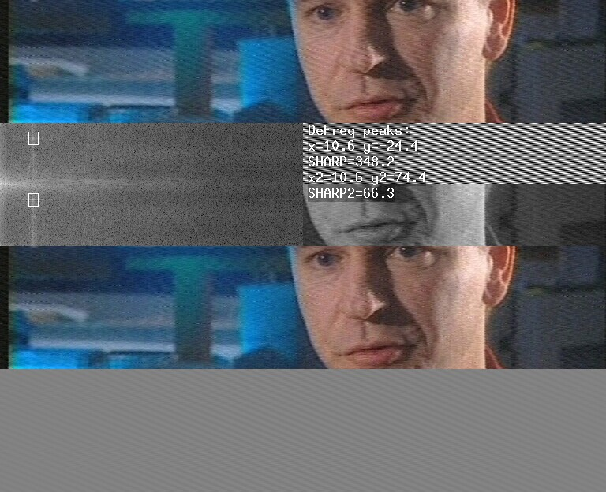

Plugin for Avisynth
2.5
Version 0.7 - April 28, 2006
Copyright (C)2004-2006 Alexander G. Balakhnin aka Fizick.
http://avisynth.org.ru
DeFreq is a filter that can remove some interfering frequencies from video frames.
It can be used for removal of regular vertical, horizontal or inclined stripes from some analog TV captures without any image quality decreasing.
Stack vertical:
1 - TV source with interference (cropped);
2 - Defreq v.0.6 show and info mode (2 search windows);
3 - Cleaned output;
4 - Input-output difference.

DeFreq uses Fast Fourier Transform method for frequency selecting and removing.
It is a spatial filter, and works as a follows:
Defreq(clip, float
"fx", float "fy", float "dx", float "dy", float "sharp",
float "fx2", float "fy2", float "dx2", float "dy2", float
"sharp2", float "fx3", float "fy3", float "dx3", float "dy3", float "sharp3", float "fx4", float "fy4", float "dx4", float
"dy4", float "sharp4", float "cutx", float "cuty", int
"plane", int "show", bool "info", bool "measure")
first parameter - input clip
fx -
window center frequency x-component for local
peak search (float percent from 0.0 to 100.0, default= 10.0)
fy -
window center frequency y-component for local
peak search (float percent from -100.0 to 100.0, default= -10.0)
dx -
half-width of search window, (float percent, default =1.5).
dy -
half-height of search window, (float percent, default =2.0).
sharp
- threshold of the peak to background relation (in search window) for
cleaning (float, default=50.0)
fx2
- second window center frequency x-component for local peak search
(float percent from 0.0 to 100.0, default=0 - disabled)
fy2
- second window center frequency y-component for local peak search
(float percent from -100.0 to 100.0, default=0 - disabled)
dx2
- half-width of second search window, (float percent, default
=1.5).
dy2
- half-height of second search window, (float percent,
default =2.0).
sharp2
- threshold of the peak to background relation (in second window)for
cleaning (float, default=50.0)
fx3
- third window center frequency x-component for local peak search
(float percent from 0.0 to 100.0, default=0 - disabled)
fy3
- third window center frequency y-component for local peak search
(float percent from -100.0 to 100.0, default=0 - disabled)
dx3
- half-width of third search window, (float percent, default
=1.5).
dy3
- half-height of third search window, (float percent, default
=2.0).
sharp3
- threshold of the maximum frequency to background relation (in third
window) for cleaning (float, default=50.0)
fx4
- fourth window center frequency x-component for local peak search
(float percent from 0.0 to 100.0, default=0 - disabled)
fy4
- fourth window center frequency y-component for local peak
search
(float percent from -100.0 to 100.0, default=0 - disabled)
dx4
- half-width of fourth search window, (float percent, default
=1.5).
dy4
- half-height of fourth search window, (float percent,
default =2.0).
sharp4
- threshold of the peak to background relation (in fourth window) for
cleaning (float, default=50.0)
cutx
- frequency x-component cutoff for low pass filter (float percent from
0.0 to 300.0, default = 0, disabled)
cuty
- frequency y-component cutoff for low pass filter (float percent from
0.0 to 300.0, default = 0, disabled)
plane
- color plane to clean, 0-Y, 1-U, 2-V (default = 0)
show
- show frequency spectrum surface and search windows (default = 0)
0 - normal processing;
1 - show current frame spectrum;
2 - show temporal average spectrum;
info
- type found peaks info on frame (default = false)
measure
- select fastest FFT method by speed measure (longer init stage)
instead of simple estimation (default=true)
Avisource("input.avi")
loadplugin("defreq.dll")
DeFreq(fx=30,fy=-40)
Attention! It is calling syntax example only. Unlike
most another filters, there are NO good DeFreq parameter values for
general
use!
It will not clean anything (but slow down the processing), if its
settings are not exactly correspondent to your picture.
You must temporary add show and info parameters, visually analyze frequency spectrum surface, and adjust parameters fx,fy to place rectangular search window at local peak of spectrum (bright spot or cross), which is correspondent to interference frequency.
Firstly look to generated sample frequency stripes at the right top corner, and try make them similar to your picture interference pattern (right bottom area). The sample stripe slope is dependent from fy/fx ratio, and the step between sample stripes is dependent from fx,fy absolute values (hint - you may use some AviSynth script parameter to preserve fy/fx ratio).
Then look to spectrum sufrace, and fine tune the search window position.
The small fxis near left edge of the spectrum image,
and the large fx (up to 100) is
near right edge.
Since v0.6, the large negative fy
values is at bottom of the spectrum image, the large positive
fy (up to 100) is at top of the spectrum image, the
small fy is at middle of height.
Set fx=0 for strictly horizontal frequency interference stripes, or set fy=0 for strictly vertical stripes.
Mode show=2 make frequency spectrum peaks more visible by temporal averaging of frames power spectral density. Just play your video clip (preferrably dynamic scenes), and tune fx,fy.
You may tune other parameters to set sharpness threshold,
color plane, add other search windows, add low pass filter.
Hint - "sharp" word is become UPPERCASE (in info
mode), when peak with value above threshold is detected.
The filter discussion is at http://forum.doom9.org/showthread.php?s=&threadid=82978
There are also similar new filters FanFilter and FQuiver (by vcmohan).
This program is free software; you can redistribute it and/or
modify
it under the terms of the GNU General Public License version 2 as
published by
the Free Software Foundation.
This program is distributed in the hope that it will be useful,
but WITHOUT ANY WARRANTY; without even the implied warranty of
MERCHANTABILITY or FITNESS FOR A PARTICULAR PURPOSE. See the
GNU General Public License for more details.
You should have received a copy of the GNU General Public License
along with this program; if not, write to the Free Software
Foundation, Inc., 675 Mass Ave, Cambridge, MA 02139, USA.
Please consider to make some donation.